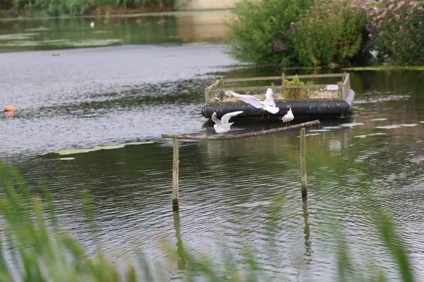
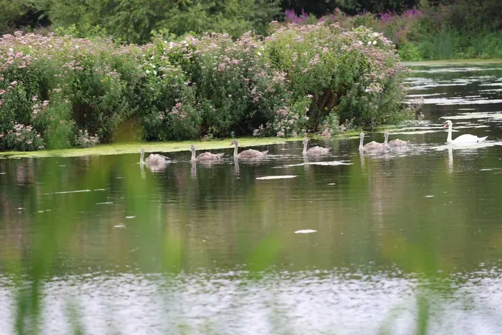
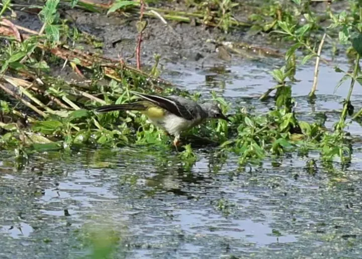

Rodley Nature Reserve
West Yorkshire · approximate public location
Black-headed gulls, mute swans and a grey wagtail photographed at Rodley Nature Reserve.
Habitat: Wetland
2026-08-01
Photographed black-headed gulls, mute swans and a grey wagtail at Rodley Nature Reserve on 1 August 2026.
Black-headed Gull 红嘴鸥
Chroicocephalus ridibundus

Mute Swan 疣鼻天鹅
Cygnus olor

Grey Wagtail 灰鹡鸰
Motacilla cinerea
